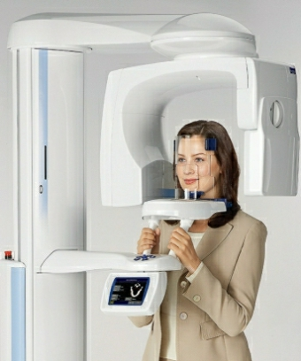

3D-диагностика зубов и лор органов
В ООО «Стоматологической фирме «Скорпион» делают 3D-снимки на высококачественном и безопасном томографе PLANMECA.
Безопасность гарантирована международным протоколом производителя. Доза облучения, которую получает пациент, минимальная – 34мкЗВ (такое же количество получает человек, используя мобильный телефон или микроволновую печь), при том, что требования ВОЗ устанавливают максимальную годовую нагрузку в объеме 1000 мкЗВ, т.е. в течение года, без вреда здоровью можно пройти 3D-обследование 29 раз. Поэтому 3D-снимки делают даже детям.
Рентген челюсти в 3D понадобится пациенту, проходящему лечение у таких специалистов: имплантолог, ортодонт, стоматолог-хирург.
3D-снимок зубов передаёт следующее:
- визуализирует состояние обеих челюстей в трёхмерном изображении;
- чётко выявляет очаги патологии в проблемных зонах с помощью масштабного изображения;
- эффективность терапевтического воздействия или проведённой хирургической манипуляции;
- обнаруживает кистозные образования или другие типы опухолей.
3D-диагностика, кроме детальной визуализации челюсти, даёт информацию о три стенки полости носа; следующих анатомических структурах:
- придаточные пазухи носа;
- носовая перегородка.
Достоинства томографа PLANMECA:
КТ-устройство имеет кольцевую форму и перемещается вокруг пациента, сканируя лицевую часть тела.
- манипуляция длится менее минуты и безболезненна;
- минимальная доза облучения;
- данные, полученные в трёхмерном изображении, обладают высокой информативностью, нет необходимости прохождения дополнительных исследований;
- снимок в 3D-формате минимизирует шансы на ошибку в ходе проведения стоматологической хирургии;
- полученный результат сохраняется на цифровом носителе, а также распечатывается.
Недостатки томографа PLANMECA:
- процедура не является бюджетным вариантом диагностики;
- не рекомендуется к прохождению в период беременности;
- не назначается пациентам с клаустрофобией и эпилепсией.
Точно поставленный диагноз с помощью 3D-диагностики – это качественное лечение! Не экономьте на дентальной диагностике.
|